CHIANG MAI GYMKHANA
EST. 1898
Chiang Mai Gymkhana Club
Founded by teak traders and British diplomats in the jungles of northern Siam. The story of the oldest sports club in northern Thailand.
April 5, 1898
On April 5, 1898, fourteen men gathered in northern Siam to sign a sporting club into existence. They were teak traders, diplomats, and colonial entrepreneurs operating at the very edge of the British Empire. What they built that day has outlasted every company they worked for, every empire they served, and every forest they logged.
The land, 90 rai (approximately 15 hectares) of flat ground near the Ping River, was granted by Chao Intawaroros Suriyavongse, the Prince of Chiang Mai, with the formal blessing of King Rama V (Chulalongkorn). The deed was issued for the express purpose of "encouraging sport in Northern Siam." In the same year, King Rama V signed a second royal deed granting 24 rai of adjacent land to the south as a Foreign Cemetery, so that the men who came to play would also have a place to rest.
"It was as if the jungle had tried to digest the British Empire in four short years. It failed."Club annals, post-war restoration, 1946
The founding members represented the four great teak companies of the north and the British Government:
Of the original fourteen signatories, only one held Thai nationality. Out of the jungle, out of commercial rivalry and political complexity, they built something that would outlast them all.
You will still see "Chiengmai" on the club's original crest, the 19th-century romanisation of the city's name. It is a deliberate nod to the club's origins, worn with pride on official documents to this day.

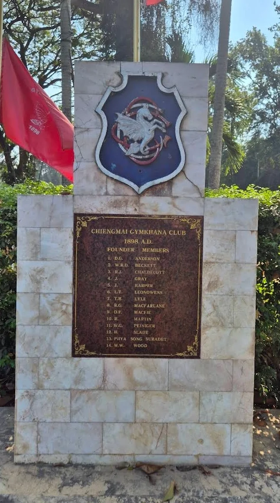
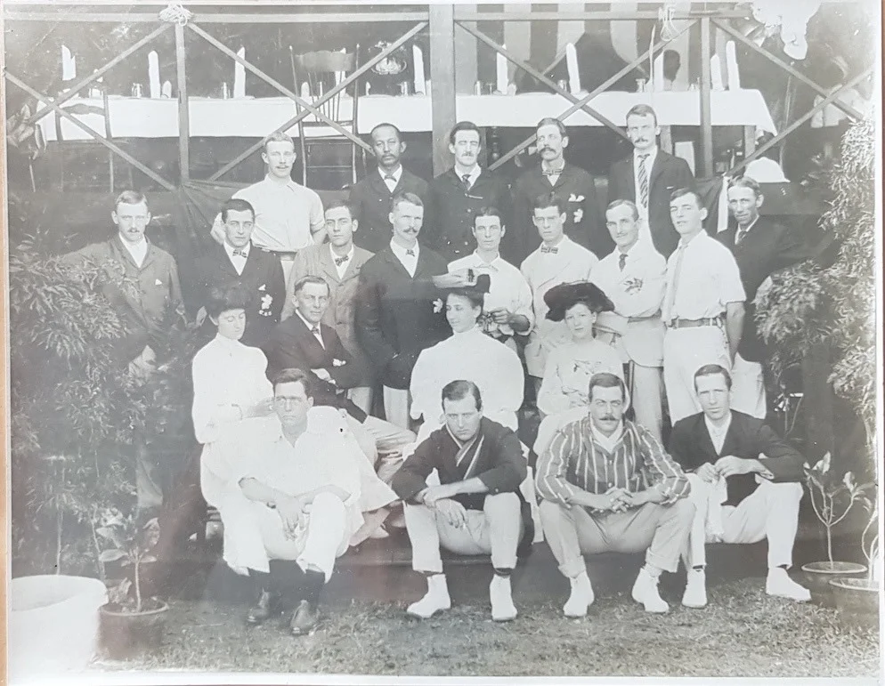
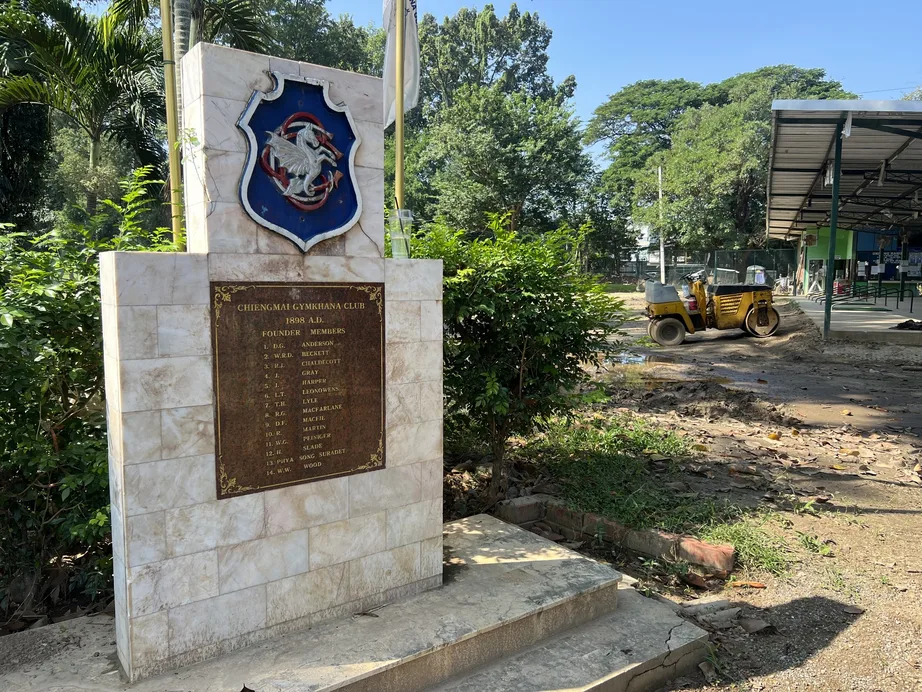
1890 to 1910
The founding of the Gymkhana Club was not vanity. It was a psychological necessity. In the late 1800s, Chiang Mai sat a month-long boat journey from Bangkok. There were no roads, no electricity, no telegraph. The men who worked here, known as the Teak Wallahs, spent nine months of every year deep in the jungle, living in bamboo huts, managing thousands of elephants, and navigating malaria, tiger attacks, and profound isolation.
When the monsoon rains made jungle work impossible, the Wallahs descended on Chiang Mai. The Gymkhana was their halfway house. They traded jungle boots for cricket whites. They settled business grudges over billiards. They remembered, briefly, that they were human beings.
No figure threads through the early Gymkhana story more vividly than Louis Leonowens, son of Anna Leonowens, the Welsh tutor to King Mongkut's children whose story inspired The King and I. Louis grew up in the Thai court and emerged as the most colourful entrepreneur of the northern teak trade. He was a master horseman who imported polo ponies from Burma and Australia, a prodigious drinker, and a founding force behind organised sport in the north. While his mother became a global celebrity through books and films, Louis's legacy is written in the timber and the turf of the Gymkhana.
The teak industry that funded the Gymkhana's existence was, by any measure, extraordinary in scale. Thousands of elephants were trained to drag enormous logs from remote highland forests to river systems running south. The logs floated downstream to Bangkok and on to global timber markets. The men who managed this operation worked across vast territories with minimal infrastructure and no outside help. The Gymkhana Club was their one concession to civilisation.
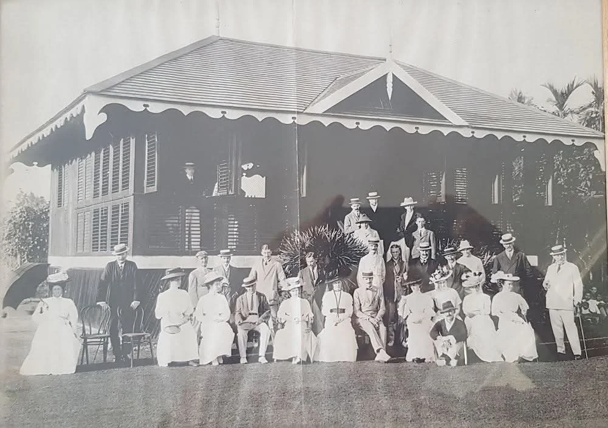
"The Gymkhana was the one place in Siam where a man could feel, for a few hours, that the world had not entirely changed."W. Somerset Maugham, The Gentleman in the Parlour, 1930
Somerset Maugham passed through Chiang Mai during his 1923 journey across Burma and Siam, the trip that produced The Gentleman in the Parlour. He was a precise observer of colonial malaise. He noted the absurdity and the genuine poignancy of men wearing heavy flannel cricket whites in 40-degree heat, drinking lukewarm gin and tonic while the jungle pressed against the boundary rope. His account gave the Gymkhana an international literary reputation it retains to this day.
W.A.R. Wood, who arrived in Thailand in 1896 and served as British Consul in Chiang Mai from 1915 until his retirement in 1931, wrote the most authentic insider account in Consul in Paradise (1965). Wood is buried in the Foreign Cemetery next door. His son Dick followed him as a club member for decades, and between father and son they represented over a century of continuous membership.
Reginald Campbell's Teak Wallah (1935) provides the grunt's-eye view: the "Friday Night Dash," the mad trek from jungle camps to the club for a weekend of golf and whiskey, and the complex social hierarchies of men who knew each other's secrets because there was no one else around.
The club's library, housed in the original teak building, still holds some of this literature today. Its bookshelves are among the quieter corners of the Gymkhana's living history.
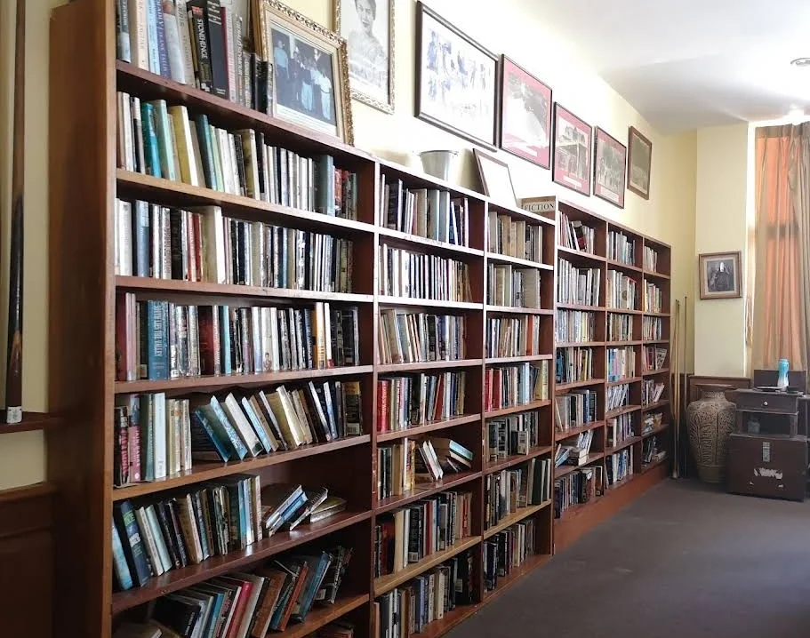
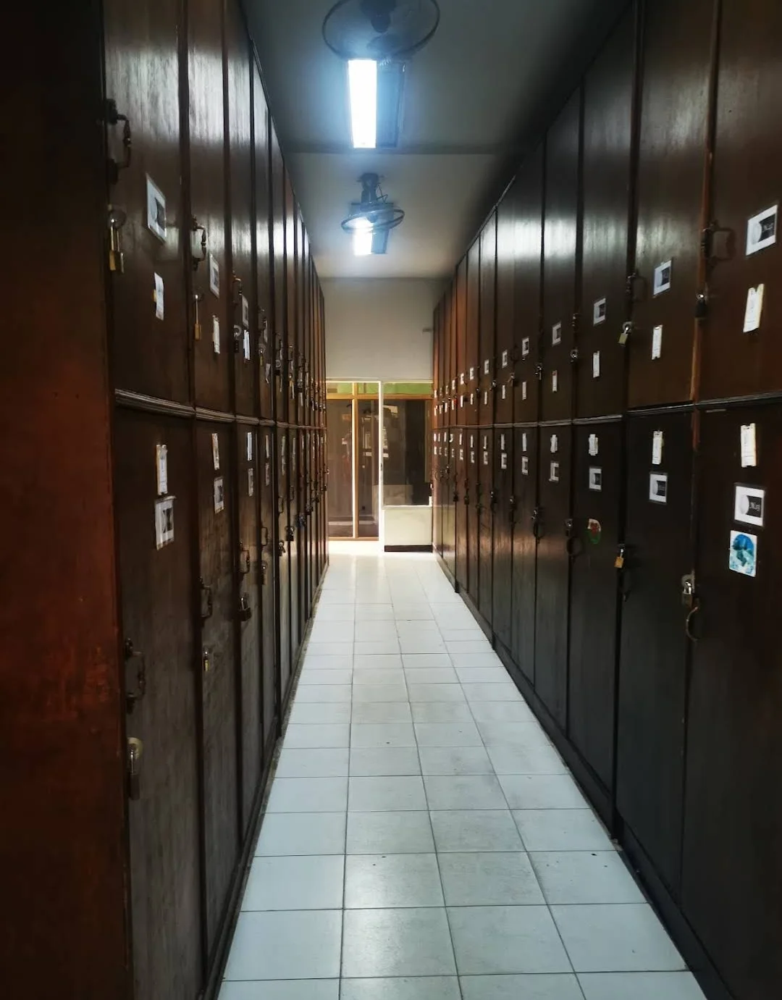
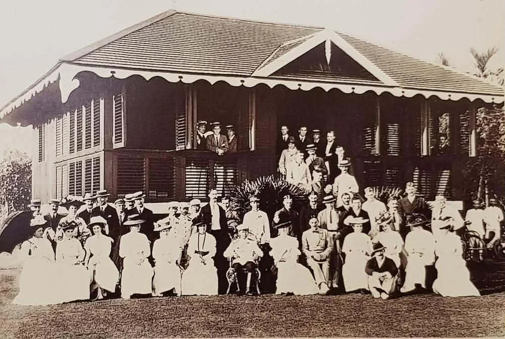
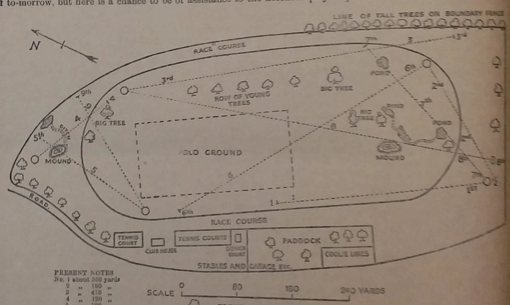
Built to Last
The Gymkhana Club's physical presence is a masterclass in Colonial-Lanna fusion. Before air conditioning existed, before concrete dominated the tropics, the founders built a structure designed to survive and remain comfortable through centuries of monsoon, heat, and humidity. It succeeded beyond all reasonable expectation.
The original clubhouse was built of solid teak, an obvious choice given the founders' profession. Like traditional Lanna houses, it was raised on heavy timber pillars. This served three purposes: it kept the floor dry during monsoon floods, allowed cool air to circulate underneath, and kept snakes and scorpions at a respectful distance.
The wide wrap-around veranda, the soul of the building, allowed members to watch cricket or golf from the shade. Inside, high ceilings and dark teak panelling created a cool interior even in the hottest months. The Honour Boards still line the walls, listing every Club President since 1898: a literal roll call of Chiang Mai's colonial and post-colonial history.
The Rain Tree (Samanea saman) that dominates the club grounds is not merely a tree. It is a monument. Its canopy spreads over an enormous area, one of the largest and most photographed trees in Thailand, providing a natural pavilion for hundreds of spectators during the Cricket Sixes. Rain trees were introduced to Southeast Asia from Central and South America in the late 19th century. This tree was likely planted at the club's inception, making it a living twin to the institution itself, now believed to be over 125 years old.
Legend holds that the first meetings to discuss the club's formation were held in the shade of this tree before the clubhouse was even built.
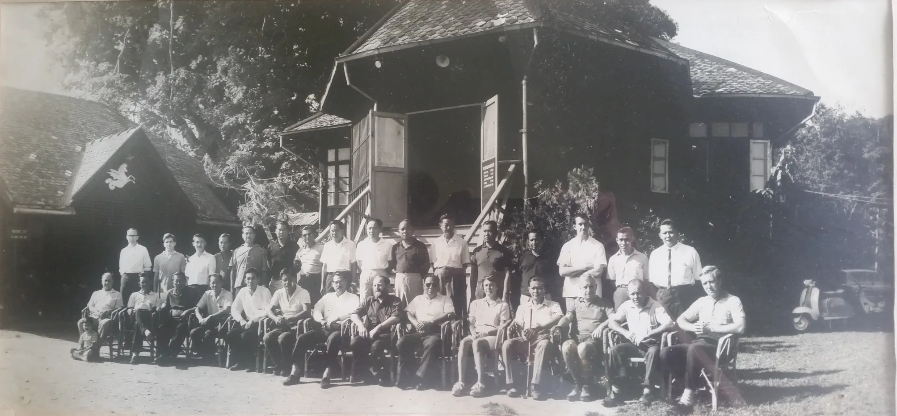
The Gymkhana hosts a 9-hole par-36 layout widely regarded as the first golf course in northern Thailand. Its design is "idiosyncratic," and deliberately so. When the grounds were originally laid out, polo, cricket, and golf were intended to operate simultaneously across the same land. The result is a course that defies modern golfing logic: non-linear, full of centuries-old trees as hazards, and historically maintained by grazing cattle rather than chemical mowing. Locals call it "The Gym." It plays harder than it looks.
What makes the Gymkhana's architecture genuinely remarkable is what has not happened to it. Colonial clubs across Asia have been gutted and reborn as luxury hotels or glass-and-steel facilities. The Gymkhana still has creaking floorboards, the smell of old teak and cut grass, and a bar where a 1920s teak trader would feel immediately at home. This is not an accident. It is a choice.
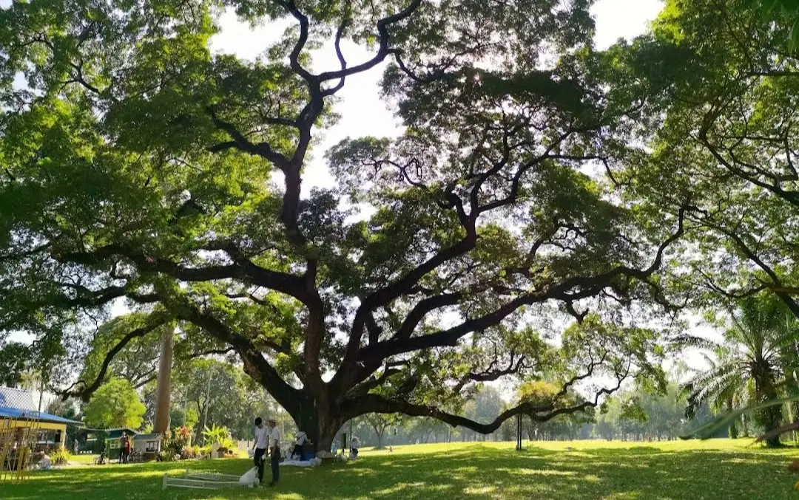
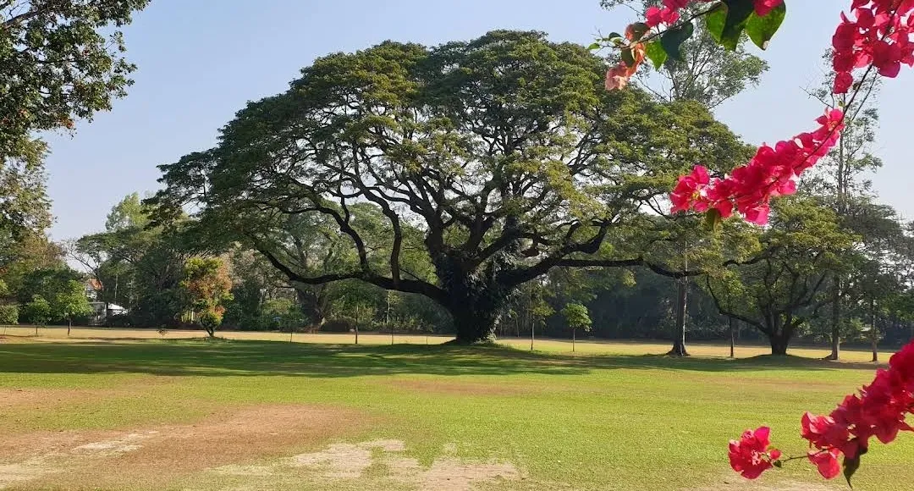
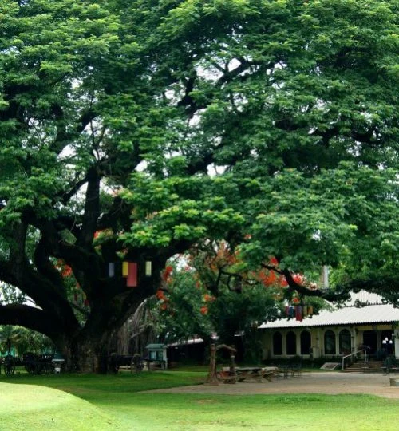
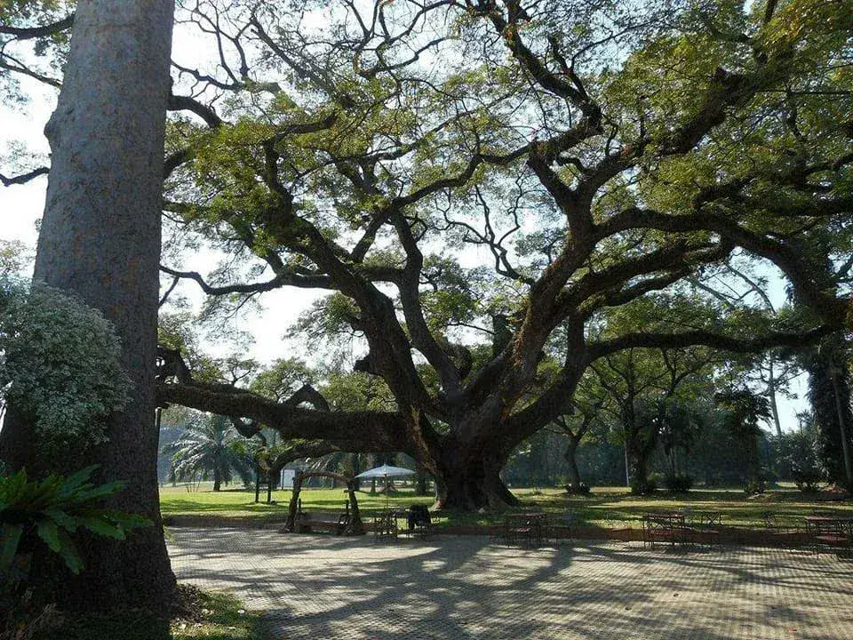
Golf, Cricket, Tennis and Squash
Sport at the Gymkhana was never just recreation. In the isolation of northern Siam, organised competition was social infrastructure. It created structure, hierarchy, and community for men who had nothing else in common except their profession and their distance from home.
Golf was established at the Gymkhana from its earliest years. The course, flat, multi-use, and historically mowed by cattle, is the oldest in northern Thailand and remains in active play today. It has hosted generations of members, visiting diplomats, and the occasional Test cricketer who fancied a round between innings.
Cricket arrived with the British founders and never left. The flat ground near the Ping River that made the original site attractive was also perfect for a cricket pitch. The game became central to the Gymkhana's identity in a way that would, nearly a century later, save the club from decline entirely.
The 1909 photograph of the Lawn Tennis Club's visit to the Gymkhana documents organised tennis on these grounds over 115 years ago. The sport has been continuous ever since, with the current courts maintained to a standard that attracts competitive players from across the region.
Perhaps the most overlooked chapter in the Gymkhana's sporting history is squash. According to historian Duncan Stearn's research for The Birth and Growth of Squash, the Chiang Mai Gymkhana Club housed Thailand's first squash court, built entirely of teak, erected around the time of the club's founding in 1898. The court predated Bangkok's Royal Bangkok Sports Club facility by 13 years.
David Macfie, a founding member of the Gymkhana, took squash further still. In 1910, he sponsored the first organised squash competition in Thailand: the Chiang Mai Challenge Cup, held at the Royal Bangkok Sports Club. That competition has been held continuously ever since and is considered one of the oldest squash competitions in the world. The teak squash court served the club for approximately 90 years before its demolition in 1985. The legacy it left in Thailand's sporting history is considerably more durable.
"Between father and son, they represented over a century of continuous membership. The most eloquent statement the Gymkhana ever made about belonging."On W.A.R. Wood and his son Dick Wood, club records
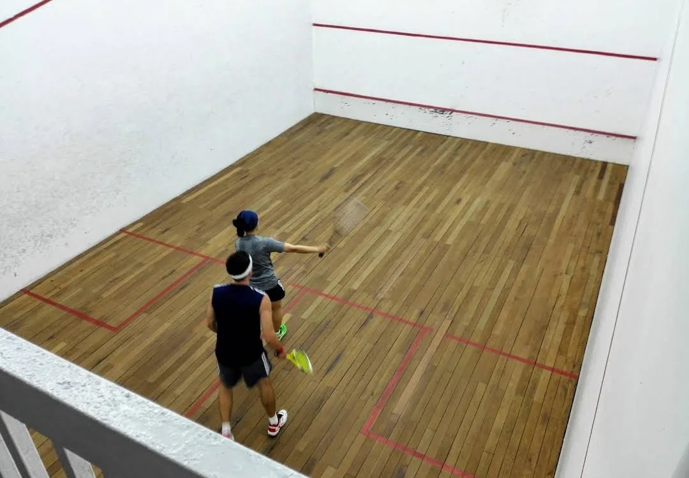
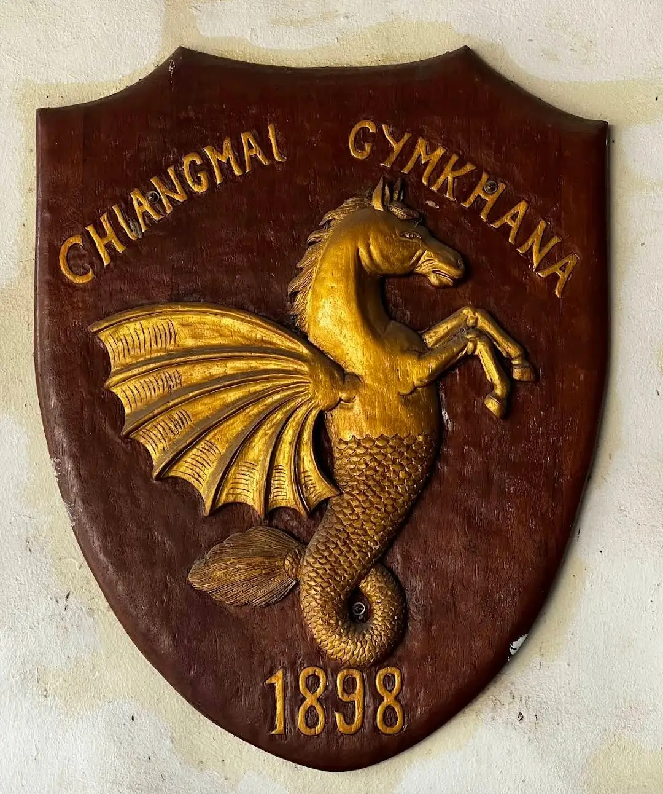
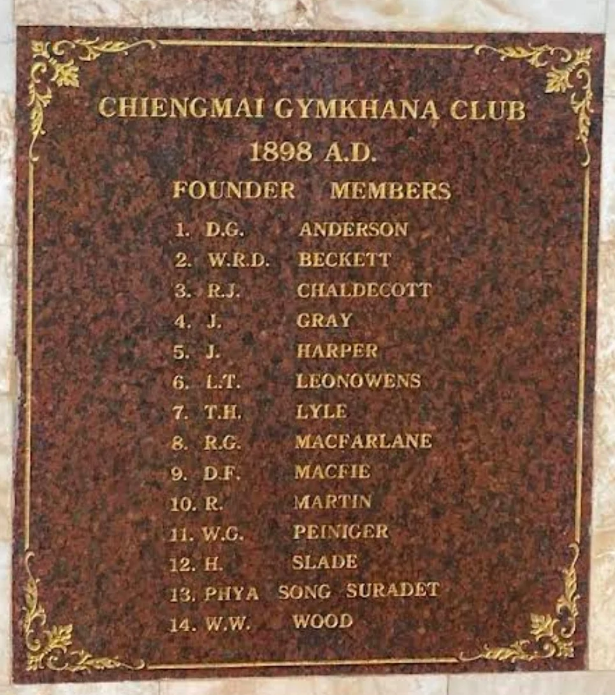
1941 to 1946
The Gymkhana's history divides cleanly at December 8, 1941. Before that date, the club was a functioning colonial institution. After it, the club was a military barracks, and its members were either enemy aliens or fugitives.
When the Japanese Imperial Army entered Thailand on December 8, 1941, almost simultaneous with the attack on Pearl Harbour, the lives of the Gymkhana's British and Australian members changed overnight. Thailand, under Field Marshal Plaek Phibunsongkhram, signed an alliance with Japan within hours. British and Australian nationals became enemy aliens. The colonial world that had sustained the Gymkhana for 43 years ceased to exist between one sunset and the next.
Many of the younger teak managers did not wait to be captured. They packed what they could carry and undertook harrowing overland treks through jungle and across mountain ranges into Burma. Those who stayed, the elderly, those with deep ties to the Thai community, those who believed their long residency might protect them, were rounded up. They were held initially in Chiang Mai before transfer to internment camps in Bangkok.
W.A.R. Wood, the legendary British Consul, was among those who managed to remain relatively safe. His immense standing in the Thai community and his Thai wife provided some protection, though his official powers were stripped. His grave in the Foreign Cemetery next door tells the rest of the story.
The Gymkhana grounds were seized for military use. The Thai military was billeted at the club. The flat cricket and polo fields were ideal for drilling troops and parking vehicles. The clubhouse that had hosted black-tie dinners was used as an officers' mess. Much of the original teak furniture was broken or repurposed. The golf course, left without maintenance through years of monsoon rains, was reclaimed by the jungle.
Next door in the Foreign Cemetery, rumours that the rich foreigners had buried gold and jewellery in coffins spread among soldiers and opportunists. Tombs were broken open and headstones smashed in a futile search for treasure that did not exist. The desecration of the cemetery was among the first things the returning community set about repairing.
"The fairways were waist-high in elephant grass, and the Long Bar was a shell of its former self. It was as if the jungle had tried to digest the British Empire in four short years."Club annals, 1946
When the war ended, the returning members found a club that was barely recognisable. A dedicated group of survivors and newly arrived expatriates spent the late 1940s literally hacking the club back into existence. The restoration was made possible in large part by the Thai elite of Chiang Mai, who helped facilitate the return of the land and provided the labour and resources to rebuild. The Gymkhana's survival after 1946 is as much a Thai story as a British one.

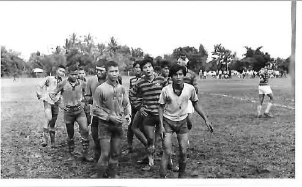
Fraternal Twins
You cannot fully understand the Gymkhana without looking at the 24 rai of land directly to its south. The Chiang Mai Foreign Cemetery and the Gymkhana Club are fraternal twins, born from the same royal act in 1898.
When King Rama V granted the land for the Gymkhana, he understood that if foreigners were going to live and play in Chiang Mai, they would eventually need a place to stay permanently. The deeds for both the club and the cemetery were signed at the same time. Many of the names on the club's Honour Boards are the same names found on the gravestones next door. It is said that many a member has "moved next door" after their final round of golf.
The most visited grave in the cemetery belongs to W.A.R. Wood, the British Consul who arrived in 1896, served until 1931, wrote Consul in Paradise, and remained in Chiang Mai until his death. He is the closest thing the Gymkhana has to a patron saint. His son Dick followed him as a member, and between father and son they represented over a century of unbroken membership. The grave is a quiet pilgrimage site for members who know the history.
During the Japanese occupation, rumours spread that the wealthy foreigners had buried gold and jewellery in the coffins of the Foreign Cemetery. Soldiers and opportunists broke open tombs and smashed headstones in a search for treasure that did not exist. When the club's members returned in 1946, restoring the desecrated cemetery was among their first acts. The restoration bound the Thai community and the returning British together in a way that the war years had not managed to break.
The Foreign Cemetery stands as the Gymkhana's final exhibit. The men of the teak era are still here, not in memory alone but in the ground beneath the rain tree's shadow. The cemetery is not separate from the club's story. It is where the story ends, and where it quietly continues.
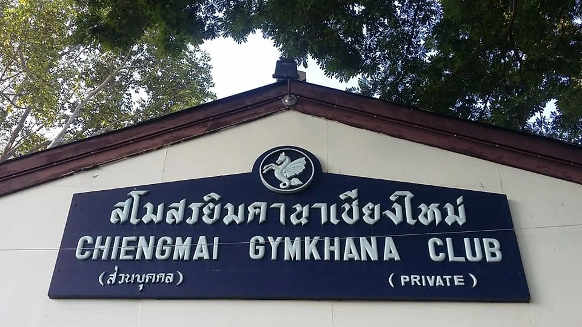
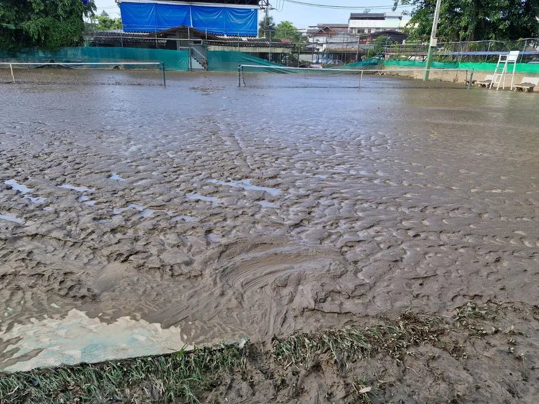
1988 and Beyond
The Gymkhana survived the war. It did not immediately thrive. Through the 1970s and into the 1980s, membership dwindled as the old teak families died out and the colonial world that had sustained the club for nearly a century dissolved entirely. By the mid-1980s, the club faced a quiet existential crisis: too much history, not enough future.
What saved it was cricket.
The Chiang Mai International Cricket Sixes was founded in 1988. The format was deliberately accessible: six players per side, five overs per innings, fast, entertaining, and open to amateur teams from around the world. It worked beyond all expectation. Teams from Australia, the UK, Hong Kong, South Africa, and across Asia began arriving annually. The Gymkhana transformed from a sleepy colonial relic into one of the most celebrated amateur cricket events on the international calendar, described by participants as the largest and best amateur cricket tournament in the world.
The Sixes brought in a new generation of expatriates: the retired executives, international travellers, and digital nomads who had no connection to teak but understood immediately what kind of place the Gymkhana was. They came for cricket and stayed for everything else.
One of the most beloved figures in the Gymkhana's modern history was Jenny Morgan, known to the cricketing world as the Duck Lady. The ritual was simple: any player dismissed for a duck (zero runs) was required to wear a small plastic duck on a ribbon around their neck for the rest of the day. The fine paid to receive the duck went to the Hill Tribe Fund, established in 2010 to support underprivileged hill tribe children with education, housing, and healthcare. Before her passing in late 2023, Jenny and her partner Terry Skillett helped raise millions of Thai Baht. The Duck tradition continues today, maintained by Susie and Jacki, now funding the Thailand Junior Cricket Development Fund.
Over the decades, the Gymkhana pitch has hosted genuine cricketing legends: Mike Gatting, Dennis Lillee, Clive Rice, and Trevor Chappell among them. They came as players, not as celebrities. That is the spirit of the Sixes.
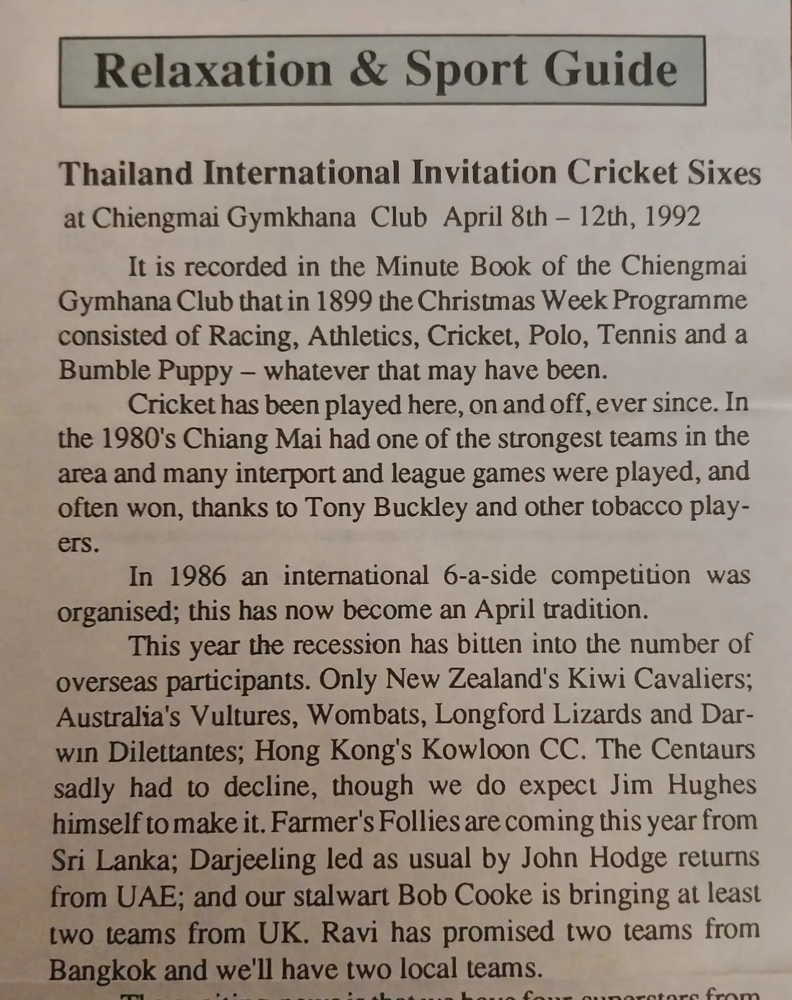
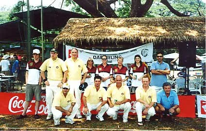
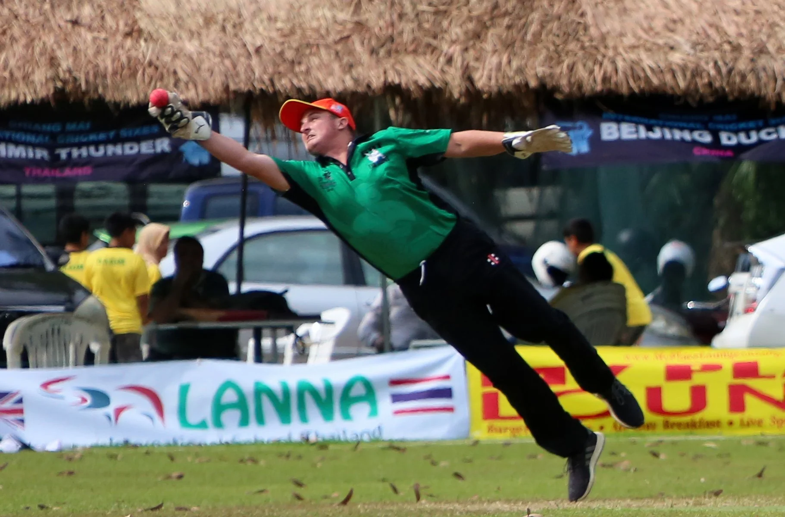
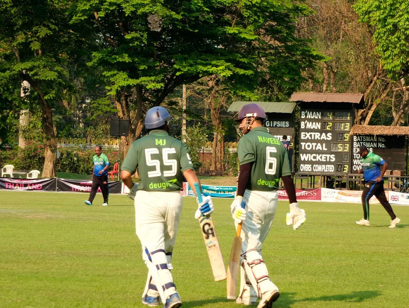
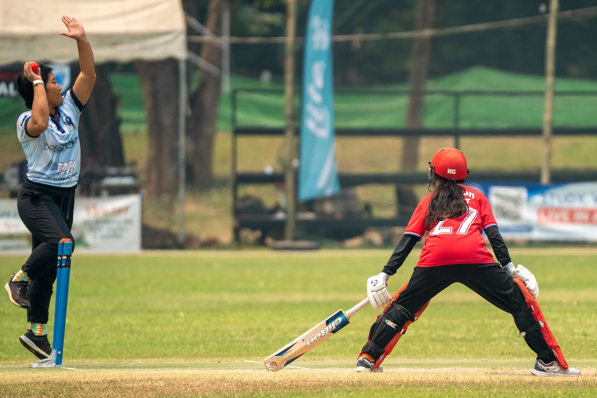
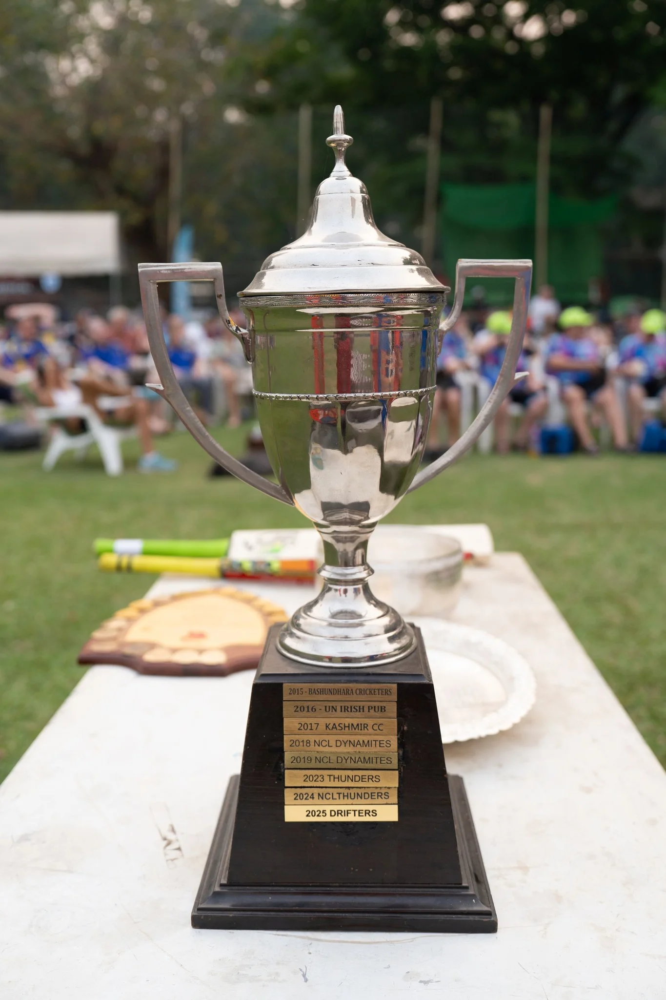
In 2024, a generous donation allowed the Sixes to acquire a new electronic scoreboard, planned for unveiling at the November tournament. Then came the floods. The Gymkhana grounds were submerged. When the water receded and the damage was assessed, the scoreboard was missing.
A few days later, Richard Lockwood overheard a phone call received by club staff. A woman living over three kilometres from the Gymkhana had found a large board with numbers on it in her garden. The floodwaters had carried it there.
The scoreboard was retrieved, transported to Bangkok, and restored to full operation by 121 Digital. It stood ready for the 2025 Sixes, physical proof that the Gymkhana endures.
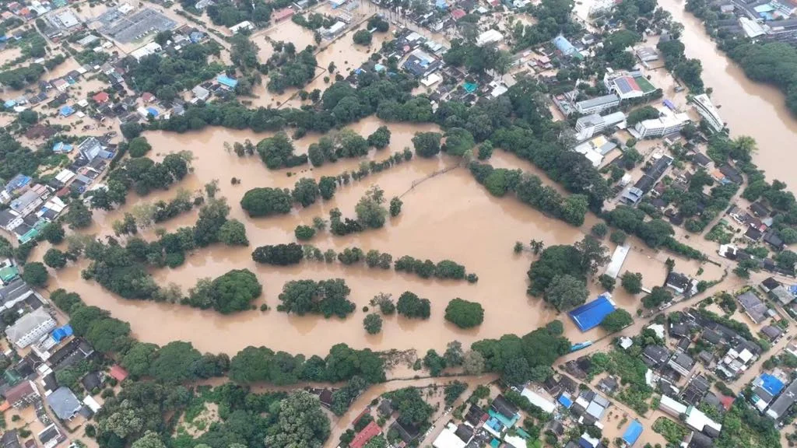
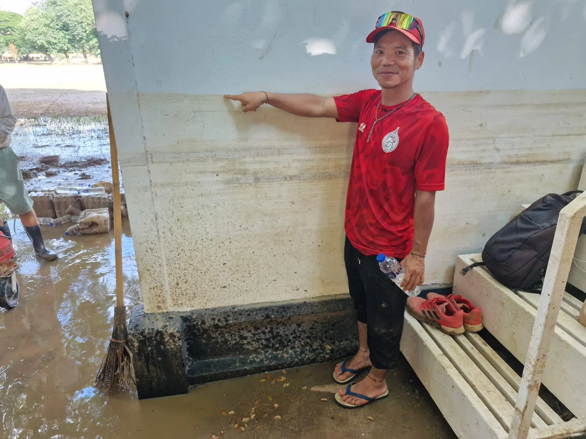
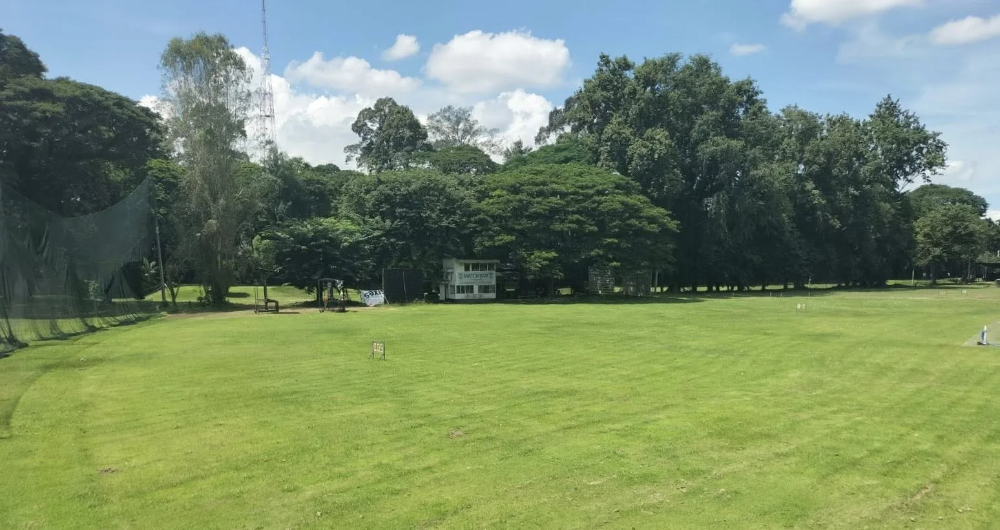
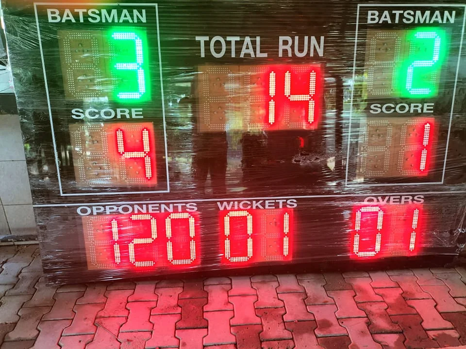
The Club Today
The Gymkhana Club has survived Japanese occupation, jungle reclamation, membership decline, and a scoreboard that travelled three kilometres on floodwater. In 2026, it is approaching its 128th year, with the 130th anniversary on the horizon.
Golf, tennis, cricket, squash, dining, weddings, and social events continue on the same 90 rai of land granted by a Prince and a King in 1898. The giant rain tree is still growing. The Honour Boards still list every President since the beginning. The Duck Lady's tradition still raises money for children who have never heard of teak.
Membership is open. The bar is open. The course is open. Come and play.
Join or Visit the Club
Footnotes
The club's original crest reads "Chiengmai" not "Chiang Mai." That was the 19th-century romanisation of the city's name. It is worn deliberately, with pride, on official documents to this day.
Because of the lush tropical surroundings, a "pitch inspection" during the Sixes occasionally involves removing a wayward cobra or python from the outfield. This is considered a normal pre-match procedure.
For the first several decades of the club's existence, women were permitted on the premises only on specific Social Evenings and were strictly prohibited from the bar area. This changed significantly after WWII. The bar, and the rest of the club, is now very much open to all.
The clubhouse features massive teak pillars that would command a fortune on today's timber market. They are original, structural, and going nowhere.
The original layout of the Gymkhana grounds was designed so that polo, cricket, and golf could all take place simultaneously across the same land. This is why the golf course layout defies conventional logic. It was never designed as a golf course alone. It was designed as a shared sporting commons.